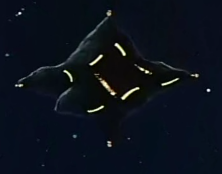

Solomon Solomon
Side 2, Solomon Sea Asteroid Fortress Racock A gigantic star shaped asteroid, Solomon forms one third of the Zeon Duchys primary defensive line in space. Between Solomon, the moon base at Granada and Pezun, all possible routes to Side 3 are protected against enemy advance. Solomon also serves two other purposes, watching the vessels going to and from the nearby neutral nation of Riah at Side 6, and as the staging base for attacking Luna II and Earth occupied space. The asteroid itself is excellently defended, large MPC turrets at each of the stars six points, and residing deep within a thick area of Side 2's shoal zone, the Solomon Sea. Racock Although Solomon is officially the SAF headquarters and commanded by Dozle Zabi, Dozle himself is routinely fighting on the front lines, and when he does the fortress is commanded by his second, Racock. Racock is a shrewd commander, believing in the preservation of the fortress above all else. Solomon  |